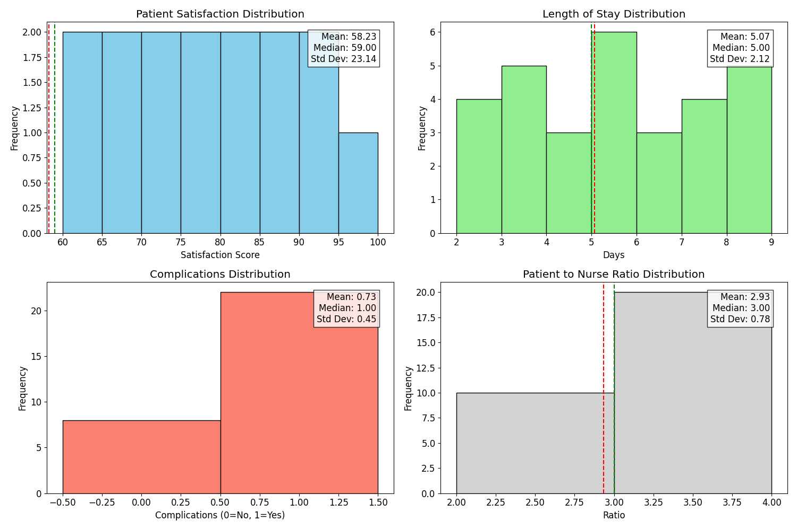
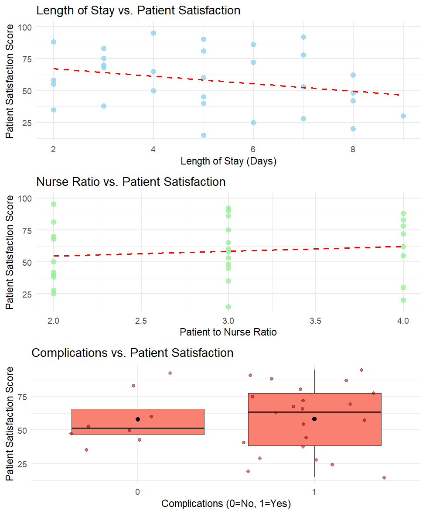
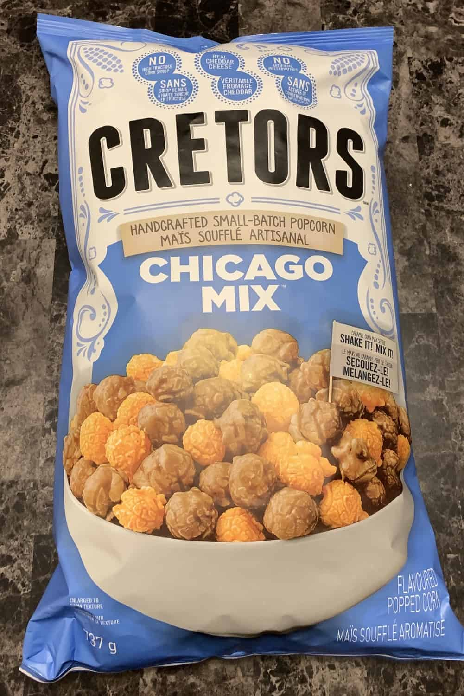

Understanding Statistical Inference in Nursing Research
Introduction to Statistical Inference
Statistical inference is the process of drawing conclusions about a population based on data collected from a sample of that population. It enables researchers to make predictions, test hypotheses, and make informed decisions without examining every person in the population. In nursing research, statistical inference is essential for validating findings that can improve patient care and healthcare outcomes.
The Costco Food Sample Analogy🍿
Think of statistical inference like sampling food at Costco 🛒. When you try a free sample, you’re tasting a small portion and variety of a much larger product line. Your impression of the sample influences your decision on whether to purchase the entire product. Your taste buds, smell and other human sensory capabilities influences your decision to buy or not buy the product. Similarly, in research, a sample represents a subset of the population, and conclusions drawn from this sample help infer characteristics or outcomes for the whole population.
Research Example: Evaluating Patient Satisfaction
Research Question
Does the average patient satisfaction score differ associate with Patient Length of Stay, Complications, or the Patient to Nurse Ratio?
Importance of the Study
This research will contribute valuable insights that promote better care practices, align with healthcare policies, and support a holistic understanding of the dynamics that impact patient experiences.
Why these the Question and the Importance of the Question Matter
The research question and its importance are essential for effective statistical analysis, as they provide a clear focus and direction for the study. A well-defined research question guides the selection of appropriate statistical methods and ensures that the analysis is relevant and tailored to specific inquiries. By grounding statistical work in a meaningful research question, researchers can ensure their findings contribute to knowledge and practice in their field, leading to informed decision-making and quality improvement initiatives.
Performing Statistical Inference: A Simple Tutorial
Step 1: Collecting the Sample Data
Just like at Costco, our first step is to collect a sample. Imagine we collect 30 random patient satisfaction scores from a local hospital as our sample from the overall patient population in the US. We also collect other characteristics which we believe influence/impact that score.
| Patient ID | Patient Satisfaction Score | Length of Stay (Days) | Complications | Patient to Nurse Ratio |
|---|---|---|---|---|
| P13 | 95 | 4 | 1 | 2 |
| P1 | 92 | 7 | 0 | 3 |
| P6 | 90 | 5 | 1 | 3 |
| P20 | 88 | 2 | 1 | 4 |
| P12 | 86 | 6 | 1 | 3 |
| P23 | 83 | 3 | 0 | 4 |
| P19 | 81 | 5 | 1 | 2 |
| P2 | 78 | 7 | 1 | 4 |
| P28 | 75 | 3 | 1 | 3 |
| P27 | 72 | 6 | 1 | 4 |
| P26 | 70 | 3 | 1 | 2 |
| P18 | 68 | 3 | 1 | 2 |
| P11 | 65 | 4 | 1 | 3 |
| P14 | 62 | 8 | 1 | 4 |
| P8 | 60 | 5 | 0 | 3 |
| P25 | 58 | 2 | 1 | 3 |
| P16 | 55 | 2 | 1 | 4 |
| P22 | 53 | 7 | 0 | 3 |
| P5 | 50 | 4 | 0 | 2 |
| P7 | 48 | 8 | 0 | 3 |
| P29 | 45 | 5 | 1 | 3 |
| P3 | 42 | 8 | 0 | 2 |
| P30 | 40 | 5 | 1 | 2 |
| P24 | 38 | 3 | 1 | 2 |
| P10 | 35 | 2 | 0 | 3 |
| P9 | 30 | 9 | 1 | 4 |
| P4 | 28 | 7 | 1 | 2 |
| P15 | 25 | 6 | 1 | 2 |
| P17 | 20 | 8 | 1 | 4 |
| P21 | 15 | 5 | 1 | 3 |
Step 2: Drawing some intial conclusions
We use tables and figures to draw general conclusions about our data before we dive into more detailed statistical tests. I often explain this process to my students by saying it’s like going on a “date” with our data. This “date” helps us get a feel for the data and allows us to apply our intuition to the large amounts of information we’ve gathered.
Think of it like sampling food at Costco 🛒. Before deciding whether to take a full sample to try, we first look at the initial presentation of the food. Those tables and figures give us that first impression, helping us understand if we want to explore further.  The hospital data analysis reveals several key patterns across four metrics. Patient satisfaction scores average around 81 out of 100, with most scores clustered in the 80-85 range, indicating generally positive patient experiences. The typical length of stay is 5 days, showing three bins of patients in the 2-4, 5-6, and 7+ ranges. Notably, complications were present in about 73% of cases, which is a concerning rate that may warrant further investigation. The patient-to-nurse ratio distribution shows most patients have a nurse with 2-4 patients, with an average of 2.93 patients per nurse (Kim et al. (2019) reported that when the patient-to-nurse ratio exceeded 2.5 the risk of mortality increased significantly.)
Step 3: Plotting relationships 📊
At Costco, we opt to sample the food. The initial tastes and aromas significantly influence our preferences for the products. Similarly, in statistics, we aim to create visual representations of the relationships we want to explore, allowing us to assess whether there is any visual evidence of a connection. These preliminary evaluations should meet the “interocular trauma” test, meaning they should be immediately obvious—essentially, they should “hit you between the eyes.” Do these graphs reveal relationships that warrant claiming a connection could exist?

Doing STATISTICS!
Now that we have laid out all the data, tables, and figures, we need to complete a rigorous and unbiased analysis of what they truly convey. The historical roots of statistics lie in agriculture🌾, where it was developed to aid farmers 🚜 in maximizing crop yields 🌱 to meet the demands of a growing population in the United States. This foundational purpose highlights the essential role of data-driven decision-making in addressing real-world challenges. With the advent of the Electronic Health Record (EHR), these statistical methods were adapted by biostatisticians to enhance healthcare research and practice. This transition allowed for a more systematic approach to data analysis within the healthcare sector, enabling researchers and healthcare organizations to extract valuable insights from large datasets. By leveraging statistical methods, professionals can identify trends and patterns that inform strategies to improve patient care, enhance staff productivity, and ultimately reduce costs. This evolution underscores the importance of rigorous statistical analysis in today’s healthcare landscape, as it empowers organizations to make informed decisions that positively impact patient outcomes and operational efficiency. As we engage with our current analysis, we must remain mindful of this historical context, ensuring that our interpretations are not only accurate but also contribute meaningfully to the ongoing pursuit of quality improvement in healthcare.
Remembering Why💭
Before we venture into the statistical analysis, I always like to remind myself of why I’m doing this. Our research question was:
Does the average patient satisfaction score differ associate with Patient Length of Stay, Complications, or the Patient to Nurse Ratio?
Or in terms of our Costco example, should I buy this product?
How do we rigorously test?🤔
Ultimately, the decision to buy or not to buy is anything but straightforward! We humans are complex creatures, and our choices often boil down to a variety of criteria: taste, smell, texture, nutrition, cost, or whether my 7-year-old will still look me in the eye if I walk out of the store without those dinosaur-shaped chicken nuggets.
Deciding whether there’s a relationship in data is like deciding to buy the product you just tasted. If all the signs are in favor on the research question, and the statistical evidence is sufficient, we can decide to “buy” that the answer to our questions likely favor what we assumed the answer to be.
Correlation Test
Let’s break down the correlation test—think of it as figuring out if your cravings grow with the number of Costco samples you turn down. Correlation measures how closely two variables move together:
Positive Correlation 📈: More sample stations you pass equals more cravings.
Negative Correlation 📉: More sample stations you pass equals less money in your pocket.
No Correlation : Passing sample stations doesn’t affect your desire for kale.
To calculate correlation, we use Pearson’s correlation coefficient, r, which ranges from -1 to +1. A strong positive r (like 0.85) suggests that passing more sample stations will contribute strongly to the more cravings you have! If it were less, then it would contribute less strongly.
The Correlation Test tests whether the true correlation at the population level is equal to 0 or something different from 0. A small p-value (0.05 typically, is measure for whether what I saw was due to chance) indicates that it is likely that the true correlation at the population level is different from 0.
T-Test
Now, let’s tackle the t-test—think of it as the ultimate showdown between two Costco samples. It helps us determine if there’s a significant difference between the averages of two groups, like how much you love those mini pizza bites compared to those mysterious vegetable rolls.
Imagine you want to see if your friends love pizza bites more than those vegetable rolls. The t-test will help you answer the burning question: “Are pizza bites truly the snack of the gods, or are the veggie rolls just misunderstood?”
The result of the t-test gives us a p-value. If the p-value is low (typically below 0.05), we reject the null hypothesis and declare that pizza bites are indeed the reigning champion of Costco sample snacks.
Applied to our Example
Length of Stay Correlation There is a weak negative correlation (r = -0.27) between patient satisfaction and length of stay. However, with a p-value of 0.15😩, this correlation is not statistically significant meaning that the correlation we observed cannot be discerned from 0 at the population level.
Nurse Ratio Correlation The correlation between patient satisfaction and nurse ratio is very weak positive (r = 0.13). With a p-value of 0.50😩, this relationship is not statistically significant meaning that the correlation we observed cannot be discerned from 0 at the population level.
Complications Analysis The t-test comparing patient satisfaction scores between patients with and without complications shows no significant difference (p = 0.96 😩). This suggests that the presence of complications does not significantly impact patient satisfaction scores.
Overall Interpretation None of the analyzed relationships demonstrate statistical significance, suggesting that patient satisfaction in this dataset is not strongly influenced by length of stay, nurse ratios, or the presence of complications.
Conclusion🤌
Ultimately we decided (from our rigorous analysis of the tables, figures and statistical tests) to not “buy” our research question. It is important to note that when you do not find evidence for your research question, it doesn’t mean that you say “It is not true” rather we say we did not find evidence in this study for it. Who knows, if we went to Costco on another day, we may have ran across that yummy Cretors Popcorn which almost always an insta-buy.😍
